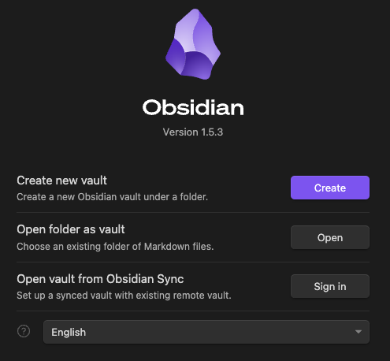
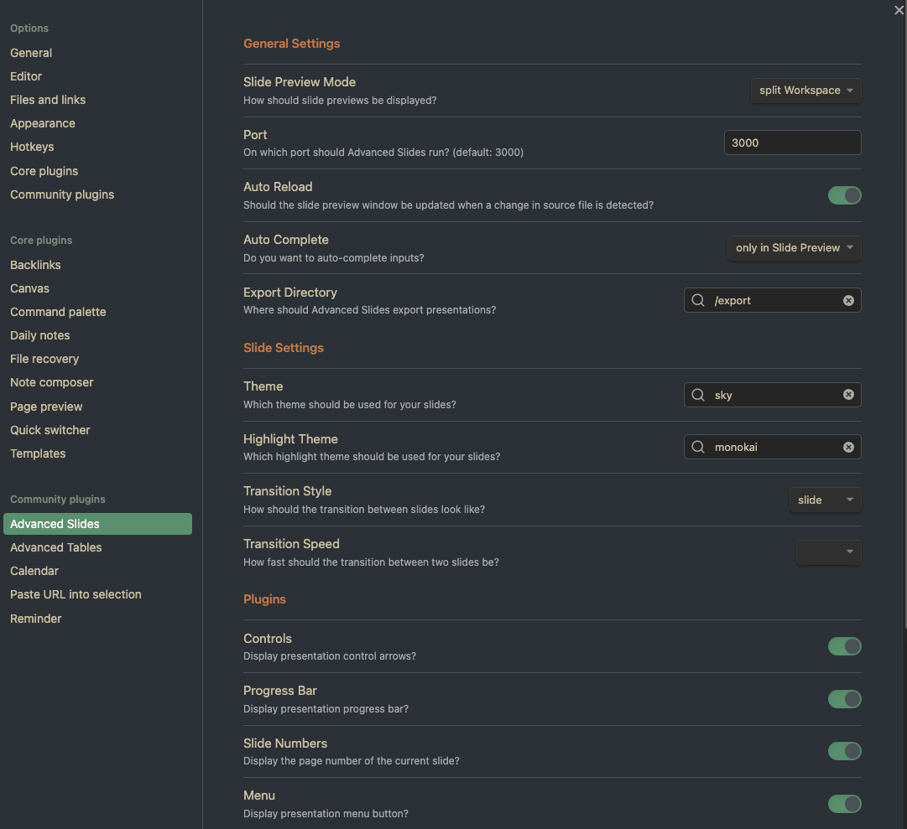
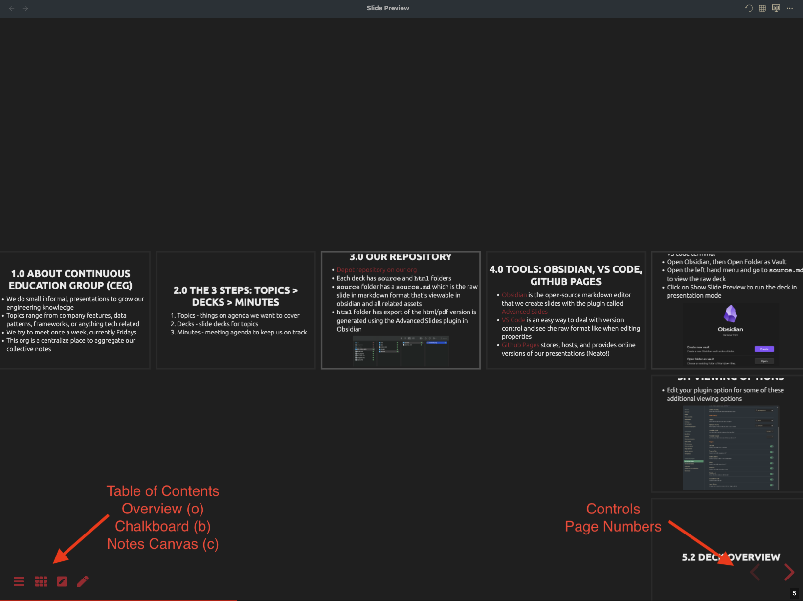
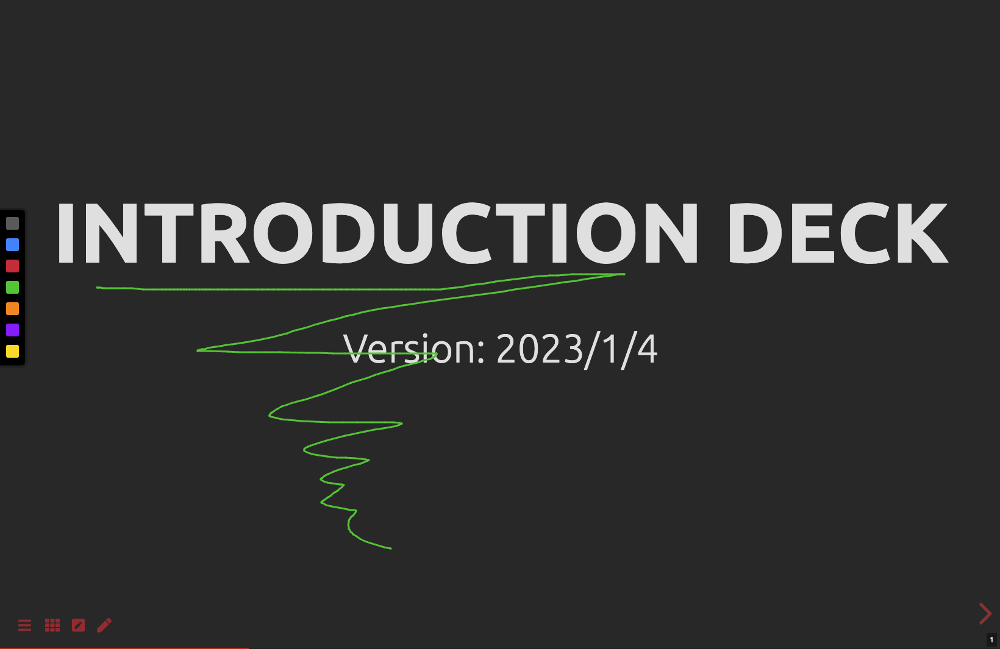
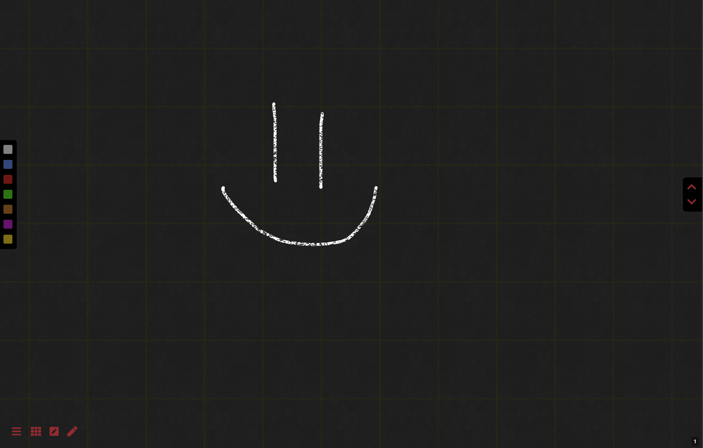
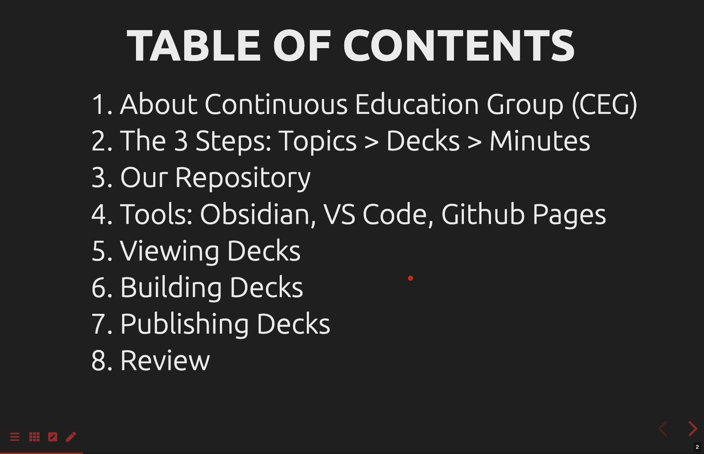
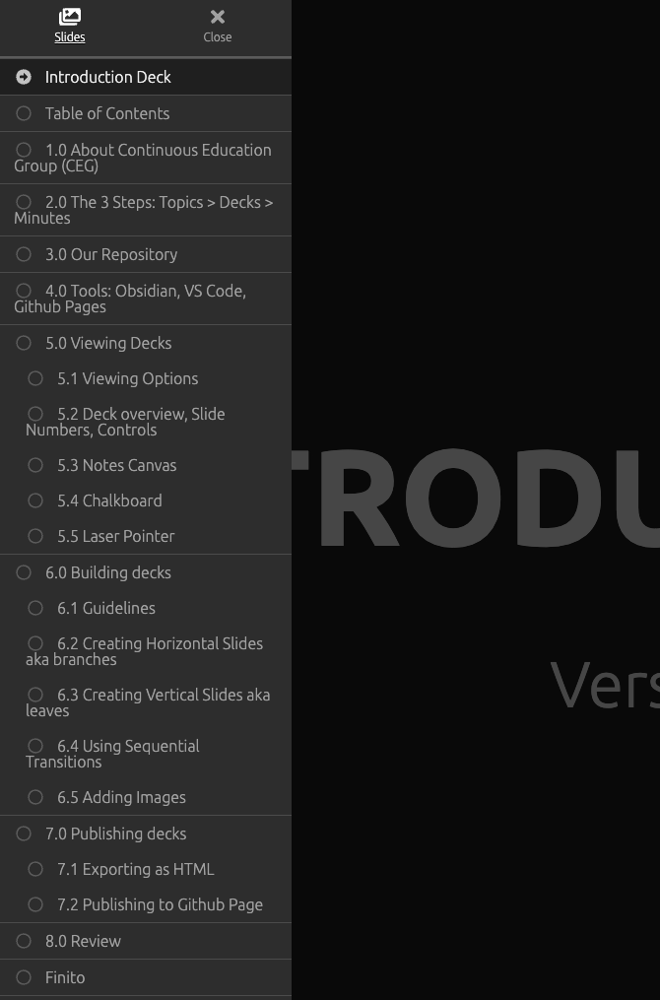
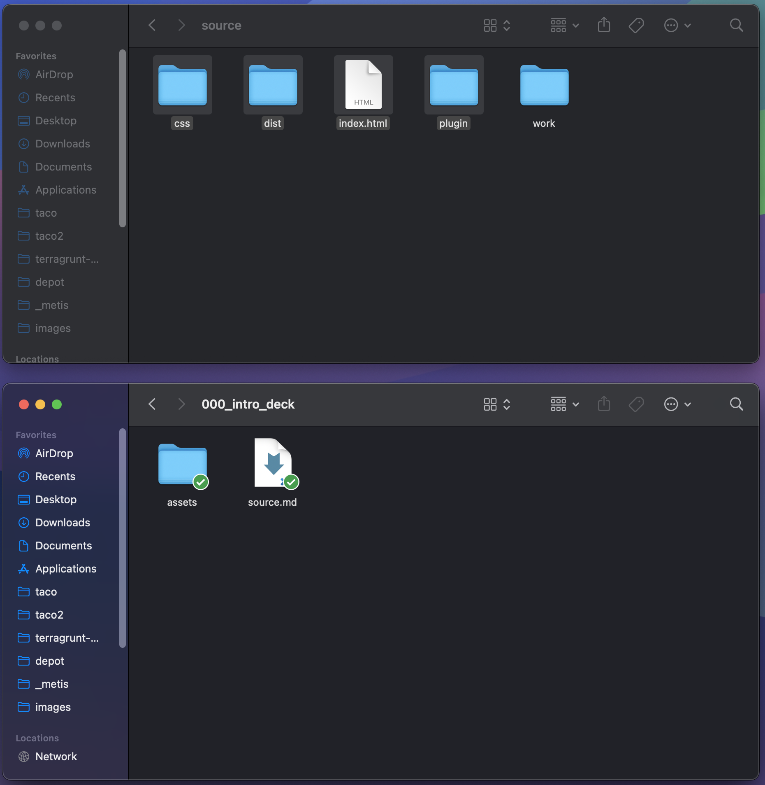

<!DOCTYPE html>
<html lang="en">
  <head>
    <meta charset="utf-8" />
    <meta name="viewport" content="width=device-width, initial-scale=1.0, maximum-scale=1.0, user-scalable=no" />

    <title></title>
    <link rel="stylesheet" href="dist/reveal.css" />
    <link rel="stylesheet" href="dist/theme/sky.css" id="theme" />
    <link rel="stylesheet" href="plugin/highlight/monokai.css" />
	<link rel="stylesheet" href="css/layout.css" />
	<link rel="stylesheet" href="plugin/customcontrols/style.css">


    <script defer src="dist/fontawesome/all.min.js"></script>

	<script type="text/javascript">
		var forgetPop = true;
		function onPopState(event) {
			if(forgetPop){
				forgetPop = false;
			} else {
				parent.postMessage(event.target.location.href, "app://obsidian.md");
			}
        }
		window.onpopstate = onPopState;
		window.onmessage = event => {
			if(event.data == "reload"){
				window.document.location.reload();
			}
			forgetPop = true;
		}

		function fitElements(){
			const itemsToFit = document.getElementsByClassName('fitText');
			for (const item in itemsToFit) {
				if (Object.hasOwnProperty.call(itemsToFit, item)) {
					var element = itemsToFit[item];
					fitElement(element,1, 1000);
					element.classList.remove('fitText');
				}
			}
		}

		function fitElement(element, start, end){

			let size = (end + start) / 2;
			element.style.fontSize = `${size}px`;

			if(Math.abs(start - end) < 1){
				while(element.scrollHeight > element.offsetHeight){
					size--;
					element.style.fontSize = `${size}px`;
				}
				return;
			}

			if(element.scrollHeight > element.offsetHeight){
				fitElement(element, start, size);
			} else {
				fitElement(element, size, end);
			}		
		}


		document.onreadystatechange = () => {
			fitElements();
			if (document.readyState === 'complete') {
				if (window.location.href.indexOf("?export") != -1){
					parent.postMessage(event.target.location.href, "app://obsidian.md");
				}
				if (window.location.href.indexOf("print-pdf") != -1){
					let stateCheck = setInterval(() => {
						clearInterval(stateCheck);
						window.print();
					}, 250);
				}
			}
	};


        </script>
  </head>
  <body>
    <div class="reveal">
      <div class="slides"><section  data-markdown><script type="text/template"><!-- .slide: style="font-size: 16pt" class="drop" -->
<div class="" style="position: absolute; left: 0px; top: 0px; height: 700px; width: 960px; min-height: 700px; display: flex; flex-direction: column; align-items: center; justify-content: center" absolute="true">

# Introduction
## Deck 000

Guide to navigating the org, deck management, and tools
</div></script></section><section  data-markdown><script type="text/template"><!-- .slide: style="font-size: 16pt" class="drop" -->
<div class="" style="position: absolute; left: 0px; top: 0px; height: 700px; width: 960px; min-height: 700px; display: flex; flex-direction: column; align-items: center; justify-content: center" absolute="true">

## Table of Contents

1. About Continuous Education Group (CEG)
2. Topics, Decks, Minutes
3. Our Repository
4. Tools: Obsidian, VS Code, Github Pages
5. Viewing Decks
6. Building Decks
7. Publishing Decks
8. Review
</div></script></section><section  data-markdown><script type="text/template"><!-- .slide: style="font-size: 16pt" class="drop" -->
<div class="" style="position: absolute; left: 0px; top: 0px; height: 700px; width: 960px; min-height: 700px; display: flex; flex-direction: column; align-items: center; justify-content: center" absolute="true">

## 1.0 About Continuous Education Group (CEG)

- We do small informal, presentations to grow our engineering knowledge
- Topics range from features, data patterns, frameworks, or anything tech related
- We try to meet once a week, currently Fridays
- This org is a centralize place to aggregate our collective notes
</div></script></section><section  data-markdown><script type="text/template"><!-- .slide: style="font-size: 16pt" class="drop" -->
<div class="" style="position: absolute; left: 0px; top: 0px; height: 700px; width: 960px; min-height: 700px; display: flex; flex-direction: column; align-items: center; justify-content: center" absolute="true">

## 2.0 Topics, Decks, Minutes

- This is the process on how we learn, process, and share
1. Topics - things on agenda we want to cover
2. Decks - slide decks for topics
3. Minutes - meeting agenda to keep us on track
</div></script></section><section  data-markdown><script type="text/template"><!-- .slide: style="font-size: 16pt" class="drop" -->
<div class="" style="position: absolute; left: 0px; top: 0px; height: 700px; width: 960px; min-height: 700px; display: flex; flex-direction: column; align-items: center; justify-content: center" absolute="true">

## 3.0 Our Repository

- Clone our org [depot repository](https://github.com/MH-Continuous-Education/depot)
- _source.md_ is the raw markdown powered by advanced slides file to create decks
	- The _assets_ folder should keep all the files types like images, audios, animations, used in the `source.md`
- _index.html_ is the build output of the source markdown file, deployable to github pages and locally viewable in any browser
	- The build output auto-generated these folders: _css_, _dist_, _plugin_
</div></script></section><section  data-markdown><script type="text/template"><!-- .slide: style="font-size: 16pt" class="drop" -->
<div class="" style="position: absolute; left: 0px; top: 0px; height: 700px; width: 960px; min-height: 700px; display: flex; flex-direction: column; align-items: center; justify-content: center" absolute="true">

## 4.0 Tools: Obsidian, VS Code, Github Pages

- [Obsidian](https://obsidian.md/) is the open-source markdown editor that we create slides with the plugin called [Advanced Slides](https://mszturc.github.io/obsidian-advanced-slides/)
- [VS Code](https://code.visualstudio.com/) is an easy way to deal with version control and see the raw format like when editing properties
- [Github Pages](https://pages.github.com/) stores, hosts, and provides online versions of our presentations
</div></script></section><section ><section data-markdown><script type="text/template"><!-- .slide: style="font-size: 16pt" class="drop" -->
<div class="" style="position: absolute; left: 0px; top: 0px; height: 700px; width: 960px; min-height: 700px; display: flex; flex-direction: column; align-items: center; justify-content: center" absolute="true">

## 5.0 Viewing Decks

- Clone the [repository](https://github.com/MH-Continuous-Education/decks) locally with your terminal or VS code terminal
- Open Obsidian, then Open Folder as Vault
- Open the left hand menu and go to any _source.md_ to view the raw deck
- Click on Show Slide Preview to run the deck in presentation mode (Cmd + Shift + E) or Browser mode (In ... menu)
  

</div></script></section><section data-markdown><script type="text/template"><!-- .slide: style="font-size: 16pt" class="drop" -->
<div class="" style="position: absolute; left: 0px; top: 0px; height: 700px; width: 960px; min-height: 700px; display: flex; flex-direction: column; align-items: center; justify-content: center" absolute="true">

## 5.1 Plugin Options

- Edit your plugin option for some of these additional viewing options
- Recommend changing setting for Slide Preview Mode to _split workspace_
- Recommend turning on all of the plugins


</div></script></section><section data-markdown><script type="text/template"><!-- .slide: style="font-size: 16pt" class="drop" -->
<div class="" style="position: absolute; left: 0px; top: 0px; height: 700px; width: 960px; min-height: 700px; display: flex; flex-direction: column; align-items: center; justify-content: center" absolute="true">

## 5.2 Deck overview, Slide Numbers, Controls

- Eagle eye's view of slides and enabled plugin options


</div></script></section><section data-markdown><script type="text/template"><!-- .slide: style="font-size: 16pt" class="drop" -->
<div class="" style="position: absolute; left: 0px; top: 0px; height: 700px; width: 960px; min-height: 700px; display: flex; flex-direction: column; align-items: center; justify-content: center" absolute="true">

## 5.3 Notes Canvas

- Draw on your slides to emphasize, persists during presentation but doesn't save to file
- Shortcut key: _c_ 


</div></script></section><section data-markdown><script type="text/template"><!-- .slide: style="font-size: 16pt" class="drop" -->
<div class="" style="position: absolute; left: 0px; top: 0px; height: 700px; width: 960px; min-height: 700px; display: flex; flex-direction: column; align-items: center; justify-content: center" absolute="true">

## 5.4 Chalkboard

- Open window to draw ideas
- Shortcut key: _b_ 


</div></script></section><section data-markdown><script type="text/template"><!-- .slide: style="font-size: 16pt" class="drop" -->
<div class="" style="position: absolute; left: 0px; top: 0px; height: 700px; width: 960px; min-height: 700px; display: flex; flex-direction: column; align-items: center; justify-content: center" absolute="true">

## 5.5 Laser Pointer

- Come on, everybody loves lasers
- Shortcut key: _q_ 


</div></script></section></section><section ><section data-markdown><script type="text/template"><!-- .slide: style="font-size: 16pt" class="drop" -->
<div class="" style="position: absolute; left: 0px; top: 0px; height: 700px; width: 960px; min-height: 700px; display: flex; flex-direction: column; align-items: center; justify-content: center" absolute="true">

## 6.0 Building decks

- [Advanced Slides](https://mszturc.github.io/obsidian-advanced-slides/) is an amazing way to create slides using just markdown syntax
- There are many customizations and we cover a couple of points here, explore their documentation for more ideas
- Feel free to use _template.md_ in the root directory for convenience
</div></script></section><section data-markdown><script type="text/template"><!-- .slide: style="font-size: 16pt" class="drop" -->
<div class="" style="position: absolute; left: 0px; top: 0px; height: 700px; width: 960px; min-height: 700px; display: flex; flex-direction: column; align-items: center; justify-content: center" absolute="true">

## 6.1 Guidelines

- Recommend adding `<!-- .slide: style="font-size: 16pt" -->` on each slide to fit all the text
- Create a Table of Contents slide and enumerate the topics being covered
- Copy and paste that to help you make slides quickly
- Slide should have most of the info, Please don't just use 1-word cues as it doesn't help future learners
- Always review your presentation in browser view because that's how github pages will display it, make sure images fit!
- 1st reminder: update the image path to the _assets_ folder after export the html build
</div></script></section><section data-markdown><script type="text/template"><!-- .slide: style="font-size: 16pt" class="drop" -->
<div class="" style="position: absolute; left: 0px; top: 0px; height: 700px; width: 960px; min-height: 700px; display: flex; flex-direction: column; align-items: center; justify-content: center" absolute="true">

## 6.2 Creating Horizontal Slides

- We call them **branches**
- Use `---` to create new slides which moves horizontally
- Enumerate the branches as whole digits like _1.0_


</div></script></section><section data-markdown><script type="text/template"><!-- .slide: style="font-size: 16pt" class="drop" -->
<div class="" style="position: absolute; left: 0px; top: 0px; height: 700px; width: 960px; min-height: 700px; display: flex; flex-direction: column; align-items: center; justify-content: center" absolute="true">

## 6.3 Creating Vertical Slides aka leaves

- Use `--` to create new vertical slides which gets nested under branches
- Enumerate the leaves as decimals like _1.1_
</div></script></section><section data-markdown><script type="text/template"><!-- .slide: style="font-size: 16pt" class="drop" -->
<div class="" style="position: absolute; left: 0px; top: 0px; height: 700px; width: 960px; min-height: 700px; display: flex; flex-direction: column; align-items: center; justify-content: center" absolute="true">

## 6.4 Using Sequential Transitions

- Use `<!-- .element: class="fragment" data-fragment-index="1" -->` to do slide transition using index as the order they appear
- Here's an example:
	- This item shows up 1st. <!-- .element: class="fragment" data-fragment-index="1" -->
	- This item shows up 2nd. <!-- .element: class="fragment" data-fragment-index="2" -->
</div></script></section><section data-markdown><script type="text/template"><!-- .slide: style="font-size: 16pt" class="drop" -->
<div class="" style="position: absolute; left: 0px; top: 0px; height: 700px; width: 960px; min-height: 700px; display: flex; flex-direction: column; align-items: center; justify-content: center" absolute="true">

## 6.5 Adding Images

- Add images in _YOUR_DECK_NAME/assets_ folder
- This is for use in the source markdown file and also the html build output
	- 2nd reminder: update the image path to the _assets_ folder after exporting the html
- Use `![[FILE_NAME]]` syntax where the filename is selectable from a dropdown
- Append `|600` after the file name to change the image size easily
</div></script></section></section><section ><section data-markdown><script type="text/template"><!-- .slide: style="font-size: 16pt" class="drop" -->
<div class="" style="position: absolute; left: 0px; top: 0px; height: 700px; width: 960px; min-height: 700px; display: flex; flex-direction: column; align-items: center; justify-content: center" absolute="true">

## 7.0 Publishing decks

- After creating the decks, export as html, push the code to Github
	- I have my export directory for the settings as _/export_
- [Github Pages](https://pages.github.com/) is already installed on our repository
	- It will automagically make your html as an online powerpoint with it's own URL
- Known bug: after exporting the html, the source markdown gets wonky and doesn't show images on the deck preview mode
	- It will still show if you run the browser preview or exporting the html
</div></script></section><section data-markdown><script type="text/template"><!-- .slide: style="font-size: 16pt" class="drop" -->
<div class="" style="position: absolute; left: 0px; top: 0px; height: 700px; width: 960px; min-height: 700px; display: flex; flex-direction: column; align-items: center; justify-content: center" absolute="true">

## 7.1 Exporting as HTML

- Click on Show Slide Preview
- Once in the slides, top right there's a _..._ menu to click
- Then go to export as HTML
- You can set the export directory in the option


</div></script></section><section data-markdown><script type="text/template"><!-- .slide: style="font-size: 16pt" class="drop" -->
<div class="" style="position: absolute; left: 0px; top: 0px; height: 700px; width: 960px; min-height: 700px; display: flex; flex-direction: column; align-items: center; justify-content: center" absolute="true">

## 7.2 Duplicated Assets

- There's an extra assets folder that we don't want: _work_
- **ONLY** copy _css_, _dist_, _index.html_, and _plugin_


</div></script></section><section data-markdown><script type="text/template"><!-- .slide: style="font-size: 16pt" class="drop" -->
<div class="" style="position: absolute; left: 0px; top: 0px; height: 700px; width: 960px; min-height: 700px; display: flex; flex-direction: column; align-items: center; justify-content: center" absolute="true">

## 7.3 Publishing to Github Page

- [Github Pages](https://pages.github.com/) is already installed on our repository and automagically make your html as an online powerpoint with it's own URL
- Add your deck to it's own folder
- Enumerate on next number of the latest foder
- Add `https://continuous-education-group.github.io/depot/YOUR_DECK_NAME/index.html` to _decks.md_ if you've structure your folders correctly
- Make a new commit and and push to the repository
- Add your deck to present in _minutes.md_
</div></script></section></section><section  data-markdown><script type="text/template"><!-- .slide: style="font-size: 16pt" class="drop" -->
<div class="" style="position: absolute; left: 0px; top: 0px; height: 700px; width: 960px; min-height: 700px; display: flex; flex-direction: column; align-items: center; justify-content: center" absolute="true">

## 8.0  Review

- Download the 3 tools: Obsidian, VS Code, Github Pages
- Know how to view, build, and publish decks
- Ready to make your first presentation
</div></script></section><section  data-markdown><script type="text/template"><!-- .slide: style="font-size: 16pt" class="drop" -->
<div class="" style="position: absolute; left: 0px; top: 0px; height: 700px; width: 960px; min-height: 700px; display: flex; flex-direction: column; align-items: center; justify-content: center" absolute="true">

## Bonito Finito

- Questions, comments, requests?
</div></script></section></div>
    </div>

    <script src="dist/reveal.js"></script>

    <script src="plugin/markdown/markdown.js"></script>
    <script src="plugin/highlight/highlight.js"></script>
    <script src="plugin/zoom/zoom.js"></script>
    <script src="plugin/notes/notes.js"></script>
    <script src="plugin/math/math.js"></script>
	<script src="plugin/mermaid/mermaid.js"></script>
	<script src="plugin/chart/chart.min.js"></script>
	<script src="plugin/chart/plugin.js"></script>
	<script src="plugin/menu/menu.js"></script>
	<script src="plugin/customcontrols/plugin.js"></script>

    <script>
      function extend() {
        var target = {};
        for (var i = 0; i < arguments.length; i++) {
          var source = arguments[i];
          for (var key in source) {
            if (source.hasOwnProperty(key)) {
              target[key] = source[key];
            }
          }
        }
        return target;
      }

	  function isLight(color) {
		let hex = color.replace('#', '');

		// convert #fff => #ffffff
		if(hex.length == 3){
			hex = `${hex[0]}${hex[0]}${hex[1]}${hex[1]}${hex[2]}${hex[2]}`;
		}

		const c_r = parseInt(hex.substr(0, 2), 16);
		const c_g = parseInt(hex.substr(2, 2), 16);
		const c_b = parseInt(hex.substr(4, 2), 16);
		const brightness = ((c_r * 299) + (c_g * 587) + (c_b * 114)) / 1000;
		return brightness > 155;
	}

	var bgColor = getComputedStyle(document.documentElement).getPropertyValue('--r-background-color').trim();
	var isLight = isLight(bgColor);

	if(isLight){
		document.body.classList.add('has-light-background');
	} else {
		document.body.classList.add('has-dark-background');
	}

      // default options to init reveal.js
      var defaultOptions = {
        controls: true,
        progress: true,
        history: true,
        center: true,
        transition: 'default', // none/fade/slide/convex/concave/zoom
        plugins: [
          RevealMarkdown,
          RevealHighlight,
          RevealZoom,
          RevealNotes,
          RevealMath.MathJax3,
		  RevealMermaid,
		  RevealChart,
		  RevealCustomControls,
		  RevealMenu,
        ],


    	allottedTime: 120 * 1000,

		mathjax3: {
			mathjax: 'plugin/math/mathjax/tex-mml-chtml.js',
		},
		markdown: {
		  gfm: true,
		  mangle: true,
		  pedantic: false,
		  smartLists: false,
		  smartypants: false,
		},

		mermaid: {
			theme: isLight ? 'default' : 'dark',
		},

		customcontrols: {
			controls: [
			]
		},
		menu: {
			loadIcons: false
		}
      };

      // options from URL query string
      var queryOptions = Reveal().getQueryHash() || {};

      var options = extend(defaultOptions, {"width":960,"height":700,"margin":0.04,"controls":true,"progress":true,"slideNumber":true,"transition":"slide","transitionSpeed":"default"}, queryOptions);
    </script>

    <script>
      Reveal.initialize(options);
    </script>
  </body>

  <!-- created with Advanced Slides -->
</html>
